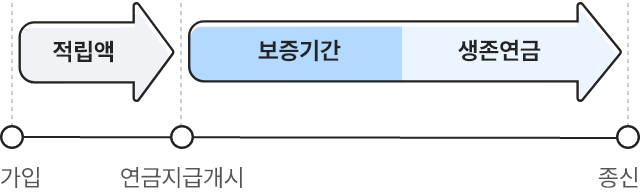
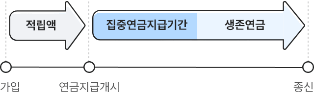
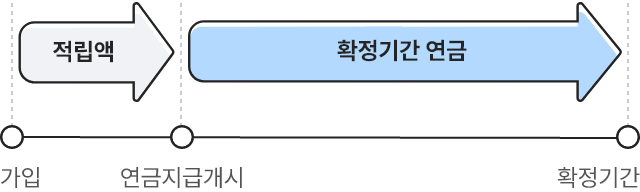
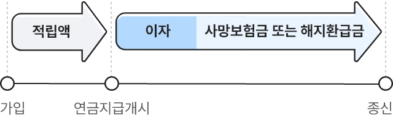

연금특약유형 안내
종신연금의 정액형이란?
보증기간 동안 계약자의 생사에 관계없이 확정적으로 연금을 받고, 보증기간이 끝난 후에는 생존 시에만 균등한 연금을 받는 형태입니다.

종신연금의 집중형이란?
집중연금지급기간 동안 다른 기간보다 연금을 더 많이 집중적으로 받는 형태입니다.

유의사항
- 10년 보증의 경우
- 10년(10회) 보증 1형:
연금지급 개시 시점부터 5년간 기본연금의 2배 지급 - 10년(10회) 보증 2형:
연금지급 개시 후 6년 차부터 5년간 기본연금의 2배 지급
- 10년(10회) 보증 1형:
- 30년 보증의 경우
- 30년(30회) 보증 1형:
연금지급 개시 후 11년 차부터 20년간 기본연금의 1.5배 지급 - 30년(30회) 보증 2형:
연금지급 개시 후 16년 차부터 15년간 기본연금의 1.5배 지급 - 30년(30회) 보증 3형:
연금지급 개시 후 21년 차부터 10년간 기본연금의 1.5배 지급
- 30년(30회) 보증 1형:
확정기간연금형이란?
정해진 기간 동안 계약자의 생사에 관계없이 균등한 연금을 받는 형태입니다.

상속연금형이란?
적립금의 이자가 연금으로 지급되며, 사망 또는 해지 시 해당 시점의 적립금을 사망보험금 또는 해지환급금으로 받는 형태입니다.
